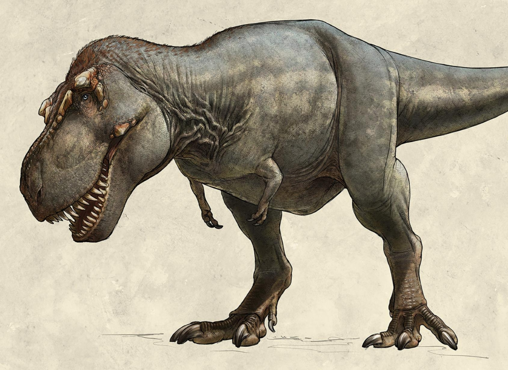
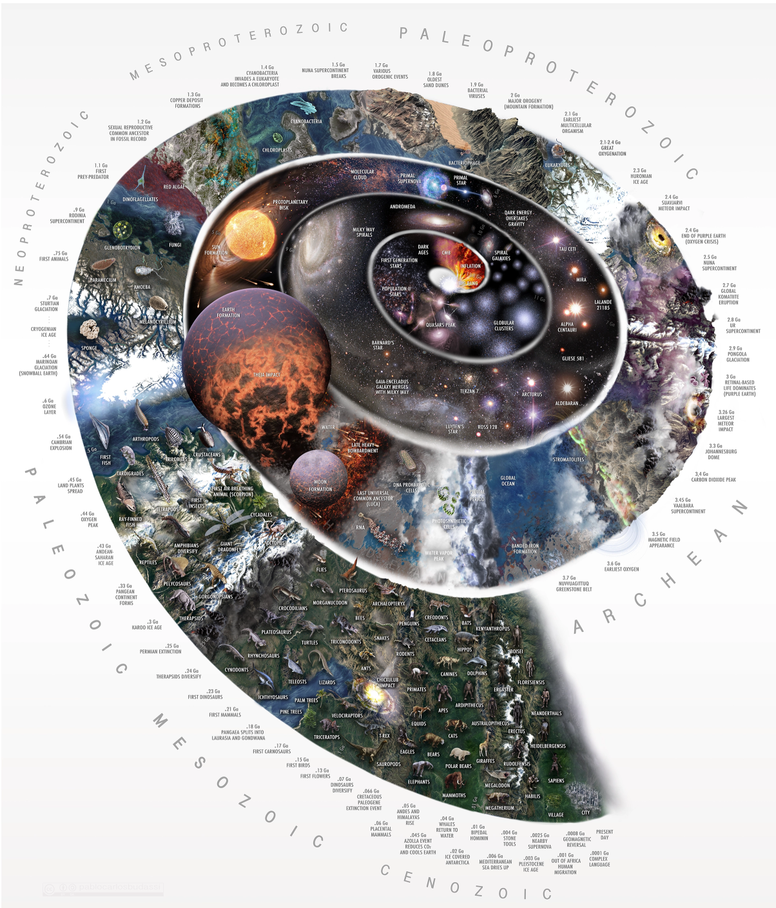

Tyrannosaurus Rex
Discover the mighty Tyrannosaurus, the king of prehistoric predators. Explore its terrifying features and the latest fossil insights that bring this giant to life.

First Fossil Discovery
Step back to the historic first fossil discovery that unlocked Earth’s ancient secrets. Witness the excitement that started the science of paleontology.

Earth’s History
Journey through billions of years of Earth’s history, from molten beginnings to the rise of life. Explore our planet’s dramatic story through time.